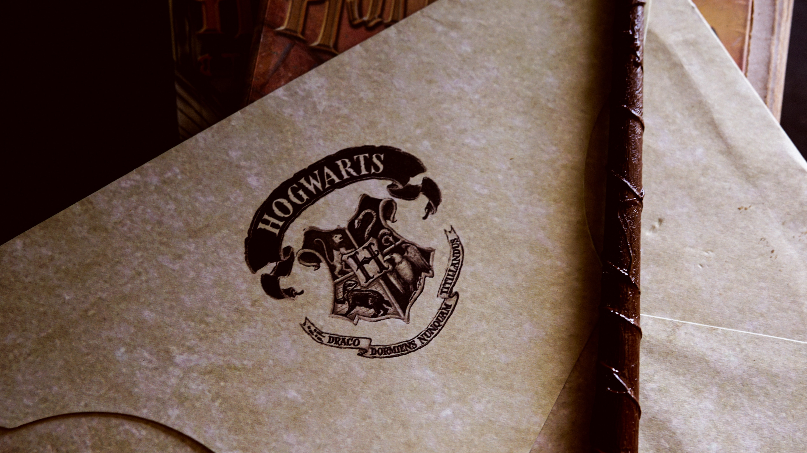
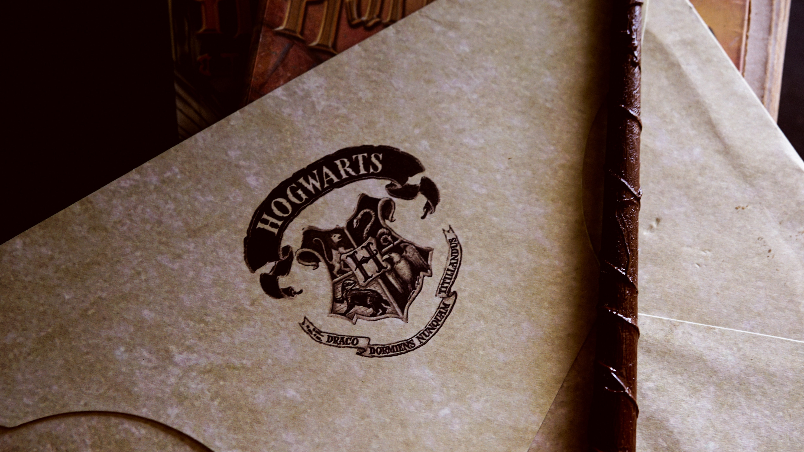

From the Kitchen to Coding
Twenty Years in Restaurants Made Me Who I Am
Let me introduce myself. My name is Samantha Dutcher, and I have been a cook, among many other things, in the restaurant industry for the last 20 years. The restaurant industry is definitely not for the faint-hearted. I've had the amazing opportunity to work with some very memorable people who have mentored me and helped me to grow into the woman that I am today. I've learned everything I needed to know to be successful in a restaurant kitchen from them, from baking breads, pies, and other desserts to grilling, sauteeing, flambeing, and roasting delicious savory dishes.
My Journey Continues On A New Path

While I had good times, and definitely some bad ones, while working in restaurants, and these experiences helped shape me into the woman I am today, this is not who I am as a person. Before I am a chef, baker, or anything else, I am a mother before I everything else. I have three beautiful children, two of them are teenagers and one is a preteen now. Ever since my kids were babies, I have struggled to make sure they have everything they needed. As a single parent, everything has become so much harder as the years have gone by. During the Covid-19 lockdown last year, I had the time I needed to really sit back and reassess where we were heading in life and what we really wanted. After months of soul-searching I came to the decision that I needed a major career change. I decided to learn how to code, with the goal of becoming a fullstack web developer. Not only is the salary higher than I have ever made in my lifetime, but there is also job security in the technology field, and job security is what is most important to me now.
My Interests
A few of the things that interest me the most are: My dogs (one is pictured below), traveling, and the Harry Potter series(which I grew up watching)

 
